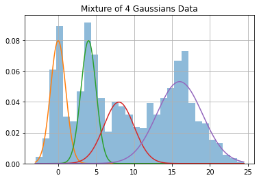
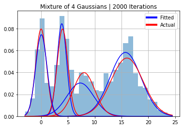

Playground for unknown µ, σ
Playground for unknown µ, σ¶
import numpy as np
import matplotlib.pyplot as plt
from matplotlib.lines import Line2D
from scipy.stats import norm
from sklearn.metrics import rand_score, adjusted_rand_score, silhouette_score
from utils import proportion
from gibbs_sampler import gibbs, multigibbs_gibbs, data_gen, make_param_dict, pred_label, score
# from matplotlib.pyplot import figure
plt.rcParams["figure.figsize"] = [10,6]
np.random.seed(10)
mu = [0,4,8,16]
sigmas = [1,1,2,3]
phi = [.2,.2,.2,.4]
k = 4
# Uncomment to view results for random data
# mu = np.random.uniform(low=-50, high=50, size=k)
# sigmas = np.random.uniform(low=0.1, high=10, size=k)
# phi = proportion(k=k, n=100)
n = 1000
y, class_list = data_gen(mu=mu, sigmas=sigmas, phi=phi, n=n)
x = np.linspace(min(y),max(y), 500)
# Create Plot of Data
plt.hist(y, 30, density=True, alpha=0.5);
for i in range(k):
plt.plot(x, norm(mu[i], sigmas[i]).pdf(x) * phi[i])
plt.title(f"Mixture of {k} Gaussians Data")
plt.grid()

N_itter = 2000
burnin = 500
[mu_est, sigma_est, phi_est, z_est, trace] = gibbs(y, N_itter, burnin, k=k)
params_dict = make_param_dict(trace=trace)
x = np.linspace(min(y), max(y),500)
plt.hist(y, 30, density=True, alpha=0.5);
for i in range(k):
plt.plot(x, norm(mu[i], sigmas[i]).pdf(x)*phi[i], color="red")
plt.plot(x, norm(mu_est[i], sigma_est[i]).pdf(x)*phi_est[0][i], color="blue")
plt.title(f"Mixture of 4 Gaussians | {N_itter} Iterations")
legend_elements = [
Line2D([0], [0], color='blue', lw=4, label='Fitted'),
Line2D([0], [0], color='red', lw=4, label='Actual')
]
plt.legend(handles=legend_elements, loc="upper right")
plt.grid()

x = np.linspace(min(y), max(y),500)
plt.hist(y, 30, density=True, alpha=0.5);
for i in range(k):
plt.plot(x, norm(mu[i], sigmas[i]).pdf(x)*phi[i], color="red")
plt.plot(x, norm(params_dict[f"mu{i}"], params_dict[f"sigma{i}"]).pdf(x)*phi_est[0][i], color="blue")
plt.title(f"Mixture of 4 Gaussians | {n} Iterations")
legend_elements = [
Line2D([0], [0], color='blue', lw=4, label='Fitted'),
Line2D([0], [0], color='red', lw=4, label='Actual')
]
plt.legend(handles=legend_elements, loc="upper right")
plt.grid()

z_est_mean = pred_label(data=y, params_dict=params_dict)
best_model = multigibbs_gibbs(y, k, N_itter, burnin)
# Gibbsampler with multiple initialisation
multi_z_est = best_model[-2]
---------------------------------------------------------------------------
KeyboardInterrupt Traceback (most recent call last)
Input In [11], in <cell line: 1>()
----> 1 best_model = multigibbs_gibbs(y, k, N_itter, burnin)
3 # Gibbsampler with multiple initialisation
4 multi_z_est = best_model[-2]
File ~/work/gaussian-mixture-models/gaussian-mixture-models/Gibbs-Sampling/gibbs_sampler.py:156, in multigibbs_gibbs(y, k, N_itter, burnin, n_init)
153 inputs.append((y, N_itter, burnin, k, seeds[i-1]))
155 with Pool() as pool:
--> 156 res = pool.starmap(gibbs, inputs)
158 # Calculating Silhouette score to find the best gibbs sampler
159 data = y.reshape(-1,1)
File /opt/hostedtoolcache/Python/3.8.12/x64/lib/python3.8/multiprocessing/pool.py:372, in Pool.starmap(self, func, iterable, chunksize)
366 def starmap(self, func, iterable, chunksize=None):
367 '''
368 Like `map()` method but the elements of the `iterable` are expected to
369 be iterables as well and will be unpacked as arguments. Hence
370 `func` and (a, b) becomes func(a, b).
371 '''
--> 372 return self._map_async(func, iterable, starmapstar, chunksize).get()
File /opt/hostedtoolcache/Python/3.8.12/x64/lib/python3.8/multiprocessing/pool.py:765, in ApplyResult.get(self, timeout)
764 def get(self, timeout=None):
--> 765 self.wait(timeout)
766 if not self.ready():
767 raise TimeoutError
File /opt/hostedtoolcache/Python/3.8.12/x64/lib/python3.8/multiprocessing/pool.py:762, in ApplyResult.wait(self, timeout)
761 def wait(self, timeout=None):
--> 762 self._event.wait(timeout)
File /opt/hostedtoolcache/Python/3.8.12/x64/lib/python3.8/threading.py:558, in Event.wait(self, timeout)
556 signaled = self._flag
557 if not signaled:
--> 558 signaled = self._cond.wait(timeout)
559 return signaled
File /opt/hostedtoolcache/Python/3.8.12/x64/lib/python3.8/threading.py:302, in Condition.wait(self, timeout)
300 try: # restore state no matter what (e.g., KeyboardInterrupt)
301 if timeout is None:
--> 302 waiter.acquire()
303 gotit = True
304 else:
KeyboardInterrupt:
from sklearn.cluster import KMeans
kmeans = KMeans(n_clusters=k)
kmeans.fit(y.reshape(-1,1))
kmean_cat = kmeans.labels_
print("Scores for baseline Gibbs Sampler")
_ = score(y, class_list, z_est)
print("Scores for Gibbs Sampler with burnin")
_ = score(y, class_list, z_est_mean)
print("Scores for Gibbs Sampler with multiple initialisation")
_ = score(y, class_list, multi_z_est)
print("Scores for Sklearn KMean")
_ = score(y, class_list, kmean_cat)
Scores for baseline Gibbs Sampler
Rand Index = 0.530
Adjusted Rand Index = -0.018
Silhouette Score = -0.080
Scores for Gibbs Sampler with burnin
Rand Index = 0.877
Adjusted Rand Index = 0.735
Silhouette Score = 0.680
Scores for Gibbs Sampler with multiple initialisation
Rand Index = 0.920
Adjusted Rand Index = 0.832
Silhouette Score = 0.359
Scores for Sklearn KMean
Rand Index = 0.921
Adjusted Rand Index = 0.827
Silhouette Score = 0.707
/home/goirik/.pyenv/versions/3.10.2/envs/semproj/lib/python3.10/site-packages/sklearn/utils/validation.py:993: DataConversionWarning: A column-vector y was passed when a 1d array was expected. Please change the shape of y to (n_samples, ), for example using ravel().
y = column_or_1d(y, warn=True)
/home/goirik/.pyenv/versions/3.10.2/envs/semproj/lib/python3.10/site-packages/sklearn/utils/validation.py:993: DataConversionWarning: A column-vector y was passed when a 1d array was expected. Please change the shape of y to (n_samples, ), for example using ravel().
y = column_or_1d(y, warn=True)
/home/goirik/.pyenv/versions/3.10.2/envs/semproj/lib/python3.10/site-packages/sklearn/utils/validation.py:993: DataConversionWarning: A column-vector y was passed when a 1d array was expected. Please change the shape of y to (n_samples, ), for example using ravel().
y = column_or_1d(y, warn=True)
/home/goirik/.pyenv/versions/3.10.2/envs/semproj/lib/python3.10/site-packages/sklearn/utils/validation.py:993: DataConversionWarning: A column-vector y was passed when a 1d array was expected. Please change the shape of y to (n_samples, ), for example using ravel().
y = column_or_1d(y, warn=True)
fig, axs = plt.subplots(12,2)
x = range(trace.shape[0])
params = ["mu1", "mu2", "mu3", "mu4", "sigma1", "sigma2", "sigma3", "sigma4", "pi1", "pi2", "pi3", "pi4"]
for i, v in enumerate(params):
y = trace[:,i]
axs[i,0].plot(x, y)
axs[i,0].set_title(v)
axs[i,1].hist(y, 30, density=True, alpha=0.5);
axs[i,1].set_title(v)
axs[i,0].grid()
axs[i,1].grid()
fig.suptitle("Trace of Parameters", fontsize=25)
fig.set_figheight(20)
fig.set_figwidth(15)
fig.subplots_adjust(hspace=1)

res
---------------------------------------------------------------------------
NameError Traceback (most recent call last)
/home/goirik/Storage/IISER/Sem_8/Semester Project/Code/StdfreeGibbs/Playground.ipynb Cell 19' in <module>
----> <a href='vscode-notebook-cell:/home/goirik/Storage/IISER/Sem_8/Semester%20Project/Code/StdfreeGibbs/Playground.ipynb#ch0000022?line=0'>1</a> res
NameError: name 'res' is not defined